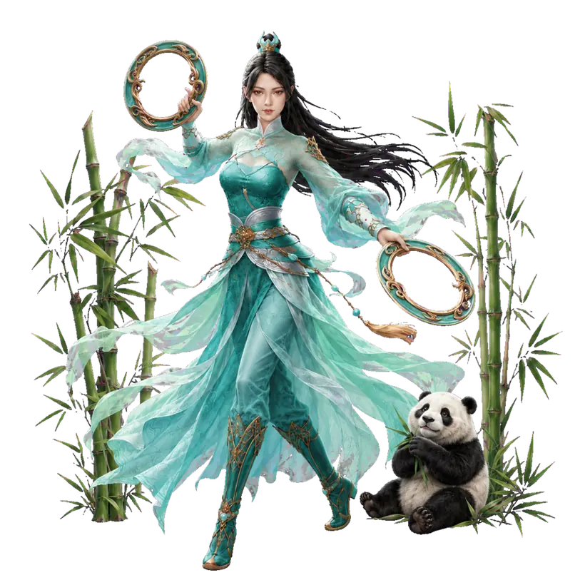
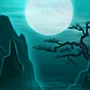

Общие требования
- Нейгун 2.
- Повторное вступление через 24 дня.
- Не находиться в розыске.
- Не занимать должность.
Фракция убийц в лазурных одеяниях, специализирующаяся на стремительном ближнем бою, контроле и коротких сериях мощных ударов.
Оружие — два кольца. Вход во фракцию связан с Чэнду, а стиль построен вокруг гармонии, мобильности и эффектов усиления.

Ранг «Гроза Царей».
Доступна после открытия второго Нейгуна. Бирка морали должна быть не «Зло».
Характеристики нейгуна, эффекты и усиления Лазурной Стражи.
При использовании нейгуна восстанавливает 4 очка цигуна.
После использования «Поступи Летящих Гусей» на 12 секунд увеличивает урон от внутренних и внешних искусств на 30%.
Каждая критическая атака сокращает время отката «Лёгкости Синего Одеяния» на 2 секунды — максимум 10 раз.
При накоплении 20 критических ударов следующая активация «Поступи Летящих Гусей» скрывает персонажа на 1 секунду.
Восемь приёмов Лазурной Стражи для ослабления защиты, контроля противника и стремительного сближения.
Наносит урон врагам в радиусе 5 метров впереди и накладывает на непарировавших противников оглушение на 2 секунды.
Наносит урон цели. Финальный удар по цели без парирования накладывает эффект «Травяные Стрелы»: скорость передвижения снижается на 25% на 5 секунд.
Рывок вперёд на 10 метров, наносящий урон всем врагам на пути. Непарировавшие противники опрокидываются и получают оглушение на 2 секунды.
Активирует состояние «Обращение Защиты в Нападение» на 5 секунд.
Наносит урон врагам в радиусе 5 метров. По цели без парирования снижает сопротивление Инь на 10% на 5 секунд.

Наносит урон врагам в радиусе 5 метров впереди.
Наносит урон врагам в радиусе 6 метров. Непарировавшая цель без статуса «Нефритовая Жаба» получает ослепление и блокировку цингуна на 1,5 секунды.
Наносит урон врагам в радиусе 5 метров. Финальный удар по цели без парирования снижает скорость передвижения на 25% на 5 секунд.
Дополнительные эффекты активируются в ячейке эффектов и изменяются после открытия полного комплекта.
Незначительно увеличивает урон навыка. При попадании по ослеплённым врагам сокращает восстановление умения на 2 секунды.
Незначительно повышает урон и скорость выполнения приёмов. После активации всех навыков комплекта эффекты изменяются.
Незначительно увеличивает урон навыка. Враги на пути без парирования получают +5% к шансу получить критический удар.